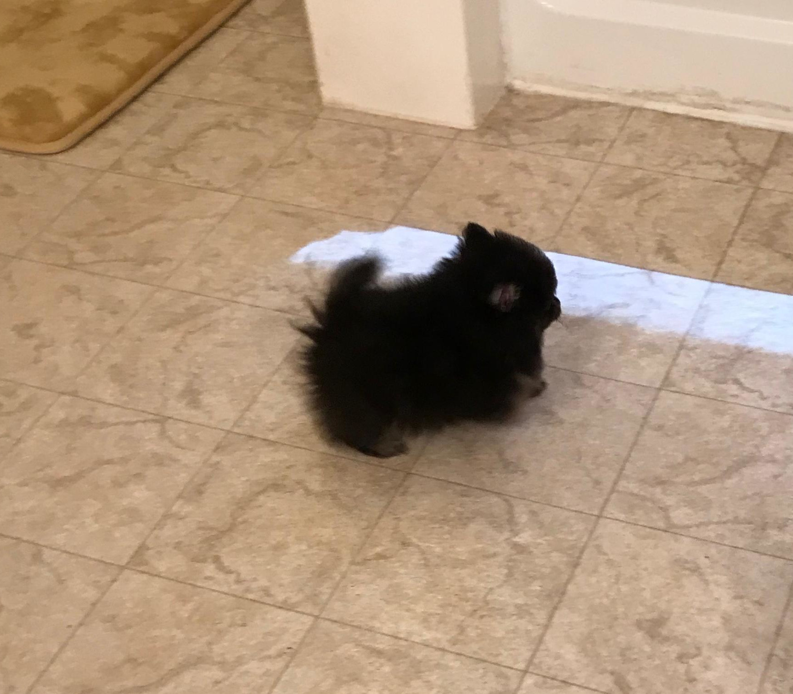

PUPPY INFORMATION
 When getting to know your puppy, offer tiny bits of cheese or bologna, etc… The puppy will run to greet you and soon always come when you call instead of you having to dig him out from under the bed or sofa.
Avoid rough play and handling of your puppy. Do not use games that encourage your puppy to bite, don’t let him play at nibbling your fingers! When he is grown you will NOT want this behavior. Be patient and talk to your puppy.
Training tips: If you don’t want your puppy on the sofa or bed do this: each time he jumps on the couch you stand immediately, tell him to get down, then when he gets down say ‘good dog’. You have one second for correction and one second for praise! (You must act very fast) If your puppy jumps up on you or others do this: each time he jumps up on a person you say ‘ah-ah’ (short and sharp correction), get him down, then say ‘good dog’. If he jumps up on you: fold your arms and turn your back, don’t look at him! In a very, very short time he will no longer jump up on you or others and will not jump on the sofa or bed. Pitch your voice low and stern for correction, high for praise.
You can train him to a lead or leash and always walk him on a lead, but be very careful about letting children pull a puppy on lead as his trachea can collapse and he will die...these are tiny dogs! It is better for children to walk your Pomeranian using only a ‘halter’ type collar. To break your puppy to a lead, just put the lead on him a few times a day and let him get used to it. He will have fits at first, but will quickly learn to love walks on the lead. You will have to watch carefully that he doesn’t get away. These puppies are so cute that they are rarely returned!!
To teach manners when on walks: If your dog lunges, or barks at others when you take him for a walk do this: as you are walking and the dog barks at a baby stroller or another dog-instantly turn and go the other direction. This trick also works if the dog pulls on the leash. In a very short time he learns to walk with you, not straining on the leash and not barking at others.
Let kids hold the puppy all they want, but watch, don’t let them lift puppy up high. Children are often tempted to put tiny puppies in boxes or bags. Be sure kids are sitting on the floor when they hold the puppy and are always supervised!!
Don’t let your puppy around a pool. Most pool owners put chicken wire around the bottom of their pool fence to keep the puppy from drowning. The puppy will fall in and just swim until exhausted and drown. Though, you can train your dog to find the steps to get out of the pool. They will love swimming with you.
If your puppy cries at night, put the crate in the utility room or somewhere the sound won’t bother you. He will soon get used to sleeping alone and will run to his crate whenever he wants to sleep, rest or just have time alone. When he is out of the crate, leave the door open so he can go back in. Don’t put his food & water in the crate. When you have to be gone for a while you can leave the puppy happy in his crate, and not have to worry about coming home to puppy “accidents” or chewed up shoes. He will chew anything until about one year old as he is “teething”. Keep plenty of acceptable chew toys for him. It is a good idea to put a few toys out for a week, then trade them for others so that your puppy does not get bored...these are very smart little dogs.
If you are bothered by your Puppy barking too much you can try one of these methods:
1. Fill a can with pennies and shake it when he barks saying “ be quiet!”.
2. Get a squirt bottle and squirt him on the nose when he barks saying “be quiet!” The squirt bottle method works best for me. I only have to pick up the squirt bottle to have absolute silence! Also, exercise your dog (take him for walks or throw the ball for him)…this will lessen his stress/anxiety and tire him out, making him much less likely to bark.
Never, never let your puppy have chocolate. This is highly toxic to dogs and many dogs die every year from eating indigestible chocolate. Your puppy is now eating Beneful Puppy, but any high quality, dry puppy chow is fine. I feed only dry dog food because it is so much better for their teeth (tooth problems are the leading cause of death in all toy breeds); and dry food makes their stool the right consistency (not runny, etc…). If you wish to change the food, do so gradually.
Housebreaking tip: Only put food and water out in the morning and the evening. After 30 minutes, remove both bowls. Your puppy will be able to be housetrained very quickly on this healthy feeding routine. If your puppy has an accident in the house, I find Lysol wipes clean it perfectly and remove all odor.
Grooming tips: Brush through your Pomeranian once each week to remove any loose hair. When he gets his full coat it will be a “double” coat with long outer layer and soft, cottony, under coat. Twice each year he will ‘blow’ his coat. This means the cottony under coat will come out. At these times, backbrush him each day until he is done blowing his coat. Females will blow their coat a few weeks after whelping a litter or after a heat cycle. If your puppy gets messy around his bottom because of the long hair, just clip it off with scissors. Give him a bath if needed, but don't bathe him very often as this will dry his skin and cause him to scratch and be allergic.
My vet advised me NOT to use the flea collars on my poms. He said it is just too much pesticide for such a small dog. Instead, if you think your pet has fleas or ticks, give him a bath in a good flea shampoo and have your house and yard treated at the same time. This should solve your 'critter' problems for a very long time.
QUESTION: What is the difference between "Full" registration and "limited" registration?
ANSWER: A limited registration shows that your dog is a purebred Pomeranian (or other breed) and registered with the American Kennel Club. BUT...any puppies whelped or sired by your dog cannot be registered. This is often the registration of choice for pet owners who do not wish to breed or show their pet, (many pet owners know right at the beginning that they plan to spay or neuter their pet); but they still want a purebred because of the advantages of knowing exactly what they are getting. Also, a puppy sold on "limited" registration is often less expensive than a puppy sold on "full" registration.
A Full Registration shows that your dog is a purebred Pomeranian (or other breed) and registered with the American Kennel Club. Also, any puppies whelped or sired by your dog with another AKC registered Pomeranian can then be registered with the American Kennel Club. Full Registration allows you to show your dog in AKC sanctioned dog shows and strive for the coveted "CHAMPION" to be added to his name.
The American Kennel Club approves over 11,000 dog events on a yearly basis. If you would like your dog to participate in dog shows, obedience or field trials, or any other AKC activities and events, your dog must be registered. Also, if you intend to breed your dog in the future, your dog must be registered in order for any litters that he sires to be eligible for registration. A spayed or neutered dog is not eligible for dog shows.
The AKC is a non-profit organization. Most of the registration fee covers the basic administrative costs of registering your dog and providing you with an AKC registration certificate. In addition to the ability to participate in AKC events, registration enables you to trace your dog’s family tree. You have one year to register your dog from the date the AKC issued the litter registration for your dog.
When choosing an “official” name for your dog to place on the AKC papers, I ask buyers to use our name as a beginning… For example we have had dogs named:
- Daisy Pom’s Black Candy
- Daisy Pom’s Sugar Cookie
- Daisy Pom’s Dazzlin’ Marigold
- Daisy Pom’s Lil’ Cupcake
- Daisy Pom’s Black Shadow
- Daisy Pom’s Dixieland Pride
- Daisy Pom’s Glittering Yzma
There is no requirement to include this name, but if you do breed your dog to another AKC registered Pomeranian, the buyers can know immediately some of her family lines by reading the “Daisy Poms” at the beginning of her official name. ENJOY YOUR PUPPY !!!!
×